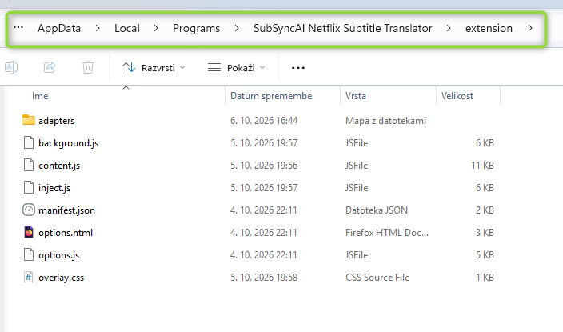
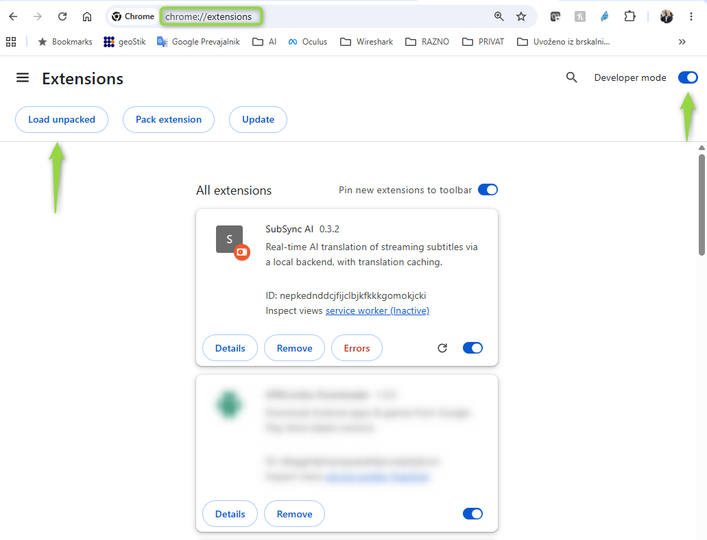
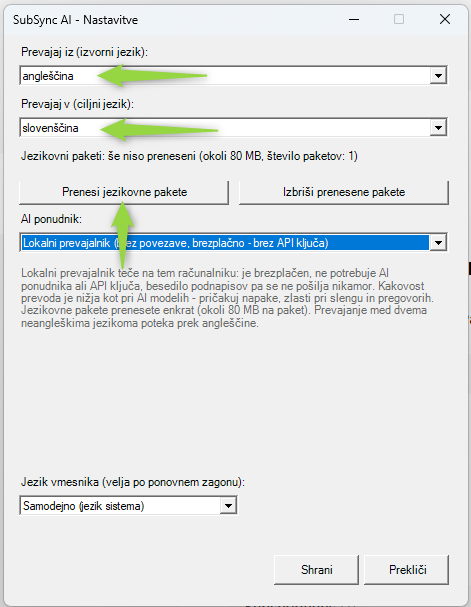

How to install SubSyncAI
From the download to your first translated subtitle. Every step is explained, including what to do if your screen looks different from the pictures.
What you need
- A computer with Windows 10 or Windows 11.
- Google Chrome or Microsoft Edge (the desktop versions). Other browsers are not supported.
- An internet connection during installation (Python, if it is missing, and the language packages are downloaded from the internet).
- About 10 minutes. You do not need administrator rights.
- Your license key from the email you received after purchase (you enter it in step 4).
The windows of the SubSyncAI app are shown in English or Slovenian (it follows the language of your Windows). The pictures in this guide show the Chrome browser; Edge looks almost the same. Your browser may show the button names in your own language — the buttons are in the same places.
1. Install the app
Download the installer
Download
SubSyncAI-Setup.exefrom this website and save it, for example, in your Downloads folder.Start the installer
Double-click
SubSyncAI-Setup.exe. If Windows shows a blue window “Windows protected your PC” (SmartScreen), click More info and then Run anyway. If your antivirus program asks, allow the file to run.Follow the installation wizard
The wizard speaks English or Slovenian (it follows your Windows language). Click Next. Leave the installation folder as it is:
%LOCALAPPDATA%\Programs\SubSync AI. This is a folder of your own user account, which is why no administrator rights are needed.Finish and start the first-time setup
Click Install and wait. On the last page keep the box “Run the first-time setup now” ticked and click Finish. (If you unticked it by mistake: Start menu → SubSync AI → Repeat setup (Python environment).)
2. First-time setup (Python)
A small window appears with the text “Installing components (Python environment and packages)”. This takes one to two minutes. Please wait and do not close it.
If Python is missing: click “Yes”
SubSyncAI needs the Python software package (version 3.9 or newer) in order to run. If Python is not on your computer, a question appears: “Do you want to download and install Python now?” Click Yes. The setup downloads the official installer from
python.org(about 25 MB), checks its digital signature and installs Python only for your user account. “Add to PATH” is switched on automatically. Everything runs by itself — you do not need to click anything in the Python installer.If you click “No”: install Python by hand
Open
https://www.python.org/downloads/, download Python and start its installer. In the first installer window tick “Add python.exe to PATH” at the bottom, and only then click Install Now. When it finishes, open the Start menu → SubSync AI → Repeat setup (Python environment).Wait for “Installation finished!”
The setup now installs the packages and the local translator (offline translation). At the end a message “Installation finished!” appears. At that moment the browser (on its extensions page) and a Windows Explorer window (with the extension folder) have already opened by themselves — they are meant for step 3. Click OK when you are ready: the SubSyncAI icon then appears near the clock and the License / Settings windows open (step 4). You may do step 3 before or after.
3. Add the browser extension (Chrome or Edge)
Why isn’t the extension installed automatically?
Chrome and Edge install extensions on their own only when they come from their official stores. The SubSyncAI Extension is added by hand with the built-in Developer mode and Load unpacked feature. It is a one-time job of about two minutes. The extension files are already on your computer — you only point the browser at the folder.
Where is the extension folder?
The folder is called extension and lies inside the SubSyncAI program folder. Its full path is:
%LOCALAPPDATA%\Programs\SubSync AI\extensionEasiest way to open it: press the Windows + R keys together, paste the path above into the small window and press Enter. The folder opens. It must contain manifest.json, background.js, content.js and a folder named adapters (see the picture). In the full form the path reads C:\Users\YOUR-USER-NAME\AppData\Local\Programs\SubSync AI\extension. AppData is a hidden folder — that is normal.
Folder not found? Right-click the Start SubSync AI icon on your desktop → Properties → Open File Location. A folder opens — the SubSyncAI program folder — and the extension folder is inside it. (An older installation may use a different program-folder name; the shortcut always leads to the right one.) At the end of the first-time setup, Windows Explorer also opens this folder by itself.

Note: in this picture the program folder still has an older name. Yours is called “SubSync AI”. What matters is the end of the path: …\extension.
Google Chrome

Open the extensions page
Open Chrome. Click into the address bar at the very top of the window (where web addresses go), type the address below and press Enter. In the picture the address bar is framed in green.
chrome://extensionsChrome did not open the extensions page?
This happens often, and it is not your fault: websites are not allowed to open
chrome://pages with a link (Chrome blocks this for safety), so this guide cannot offer a clickable link — and the setup’s own attempt to open the page can fail, for example when another browser is your default or Chrome runs with a different profile. Do it by hand with one of these ways:- Type it yourself: click the address bar at the top of Chrome and type
chrome://extensions(two slashes!), then Enter. Or use the Copy button above and paste with Ctrl + V. - Through the menu: click the three dots ⋮ at the top right of Chrome → Extensions → Manage extensions.
- Through the puzzle icon: click the puzzle-piece icon next to the address bar → Manage extensions (at the bottom of the list).
- It searched Google instead? Then you typed it into the page’s search box and not into the address bar. Click the very top bar of the window and try again.
- Type it yourself: click the address bar at the top of Chrome and type
Turn on “Developer mode”
At the top right of the extensions page switch Developer mode on, so that the switch turns blue (right arrow in the picture). Three buttons then appear at the top left: Load unpacked, Pack extension and Update. If you do not see them, Developer mode is still off.
Click “Load unpacked”
Click the button Load unpacked at the top left (left arrow in the picture). It loads an extension straight from a folder. A Windows window for selecting a folder opens.
Select the “extension” folder
In that window click into the address bar at the top, paste the folder path (use the Copy button in “Where is the extension folder?” above) and press Enter. You are now inside the folder. Click Select Folder at the bottom right. Important: select the folder
extensionitself — the one that containsmanifest.json— not the folder above it and not theadaptersfolder.Check that it worked
A card named SubSync AI (with a version number such as 0.3.2) appears in the list and its switch on the right is blue (turned on) — as in the picture. That is all: the extension is installed.
Pin the icon (recommended)
Click the puzzle-piece icon next to the address bar and then the pin icon next to SubSync AI. The icon then always stays visible in the toolbar. Clicking it opens the subtitle appearance settings (font size and colors).
Microsoft Edge
Edge works the same way as Chrome — only the address and the place of one switch differ.
Open the extensions page
In the Edge address bar type the address below and press Enter. If that does not work: click the three dots … at the top right → Extensions → Manage extensions.
edge://extensionsTurn on “Developer mode”
In Edge the Developer mode switch is in the left-hand menu of the extensions page (at the bottom left). If you do not see a left-hand menu, the window is narrow: click the menu icon ☰ at the top left to show it. After switching it on, the buttons Load unpacked, Pack extension and Update appear at the top.
Load the folder
Click Load unpacked, then do exactly what is described in Chrome steps 4 and 5: paste the folder path into the address bar of the window, press Enter, click Select Folder and check that the card SubSync AI appears with a switched-on switch.
Show the icon in the toolbar (recommended)
Click the puzzle-piece icon in the toolbar and the eye icon next to SubSync AI (“Show in toolbar”).
Good to know
- Do not move, rename or delete the folder. The browser reads the extension straight from it. If the folder is gone (for example after a reinstall into another location), the extension stops working: remove the SubSync AI card and use Load unpacked again.
- After updating SubSyncAI: open the extensions page and click the circular arrow (reload) on the SubSync AI card. If the browser reports an error, remove the card and use Load unpacked again.
- Once per browser and profile. If you use both Chrome and Edge, or several Chrome profiles, repeat step 3 in each one where you watch.
- Warning about developer-mode extensions. From time to time Chrome or Edge may show a notice that an extension runs in developer mode. That is expected for this kind of installation — keep the extension enabled and do not click “Disable”.
4. License and language settings
After you click OK in the setup window, the SubSyncAI tray app starts. Its icon appears near the clock at the bottom right of the screen (if you do not see it, click the small arrow ^ to show hidden icons), and the windows for the first settings open.

Enter your license key
If no key is entered yet, the License window opens first. Copy the license key from the email you received after purchase, paste it into the field and click Activate. You should see “License activated successfully.”. This step needs an internet connection. Later you can reopen it: right-click the tray icon → License….
Open the Settings window
The Settings window opens next (if it does not: right-click the tray icon → Settings (language, AI provider, model, key)...). The picture shows it in Slovenian; yours uses English or Slovenian, depending on your Windows.
Choose the two languages
Translate from (source language) is the language of the original subtitles (for example English). Translate to (target language) is the language you want to read (for example Slovenian). The two languages must be different.
Choose the translator
Under AI provider choose Local translator (offline, free - no API key) to translate on your own computer for free — no API key needed and the subtitle text is not sent anywhere. Or choose an AI provider (OpenAI, Anthropic, Google Gemini or your own endpoint) and enter its API key; the costs of AI usage are then paid to that provider.
Download the language packages (local translator)
Under the languages you see, for example, “Language packages: not downloaded yet (about 80 MB, 1 package(s))”. Click Download language packages (arrow in the picture). A confirmation window “Download language packages?” appears: read it, tick the check box and click Download. If you cannot see the window, look at the taskbar for a flashing icon or press Alt + Tab — the download starts only after you confirm. Wait until “Language packages downloaded.” appears (about 80 MB per package, downloaded only once). Translating between two languages that are not English goes through English, so two packages are needed.
Click “Save”
Click Save. You should see “Settings saved.”. If you have not downloaded the language packages yet, the app warns you that translation will not work until you do. At the bottom of the window you can also choose the interface language (it applies after a restart).
5. Watch with translated subtitles
Check the tray icon
The SubSyncAI icon near the clock shows the state: green = connected and ready, orange = translating right now, red = backend not reachable. Hold the mouse over it to read the status. If the icon is not there, start the app with the Start SubSync AI icon on your desktop or in the Start menu.
Open Netflix or HBO Max
In the Chrome or Edge where you added the extension, open Netflix (page address
netflix.com/watch/…) or HBO Max (play.hbomax.com/video/watch/…) and start a video. If the video page was already open before you added the extension, press F5 once to reload it.Turn the subtitles on in the player
In the player’s own subtitle menu turn the subtitles on and pick the language you set as “Translate from” (for example English). SubSyncAI then shows the translated subtitles over the picture.
Change things later
Languages, translator, API key: right-click the tray icon → Settings (language, AI provider, model, key).... Subtitle size and colors: click the SubSync AI icon in the browser toolbar. Closing the app: right-click the tray icon → Exit.
Problems? Troubleshooting
Click a question to open the answer.
The extensions page did not open (chrome://extensions)
chrome://extensions and press Enter. In Edge type edge://extensions. Or use the menu: ⋮ (Chrome) or … (Edge) at the top right → Extensions → Manage extensions. Details are in step 3 above (“Chrome did not open the extensions page?”).I do not see the “Load unpacked” button
I cannot find the folder (AppData is hidden)
%LOCALAPPDATA%\Programs\SubSync AI\extension and press Enter. Or right-click the Start SubSync AI icon on the desktop → Properties → Open File Location → open the folder extension. To see hidden folders in Explorer: View → Show → Hidden items.“Manifest file is missing or unreadable”
extension — the one that directly contains the file manifest.json. Not the folder above it (SubSync AI) and not adapters. Click Load unpacked again and select the right folder.The extension card shows “Errors” or the switch is off
No translated subtitles appear
The tray icon is red or missing
Python could not be downloaded or installed
https://www.python.org/downloads/ (tick Add python.exe to PATH). If it says Python was installed but could not be located, sign out of Windows and in again (or restart the computer) and then run Repeat setup (Python environment) from the Start menu.The language-package download does not start or fails
Windows or my antivirus blocks SubSyncAI-Setup.exe
The extension disappeared after a browser restart or update
Everything works? Enjoy!
Still stuck? Right-click the tray icon → Diagnostics (copies a report), and send that text to support together with a short description of the problem.
← Back to the home page